Feature selection#
Feature selection methods reduce data dimensionality to address overfitting and computational constraints in machine learning models []. The high number of molecular descriptors can lead to the curse of dimensionality, where the model performance decreases as the number of features increases []. Two approaches were applied to select relevant features. The unsupervised method, Principal Component Analysis (PCA), transforms the original descriptors into uncorrelated components. The supervised methods—LASSO, Random Forest importance, and Boruta—select features based on their correlation with retention times [], [].
Unsupervised feature selection#
The molecular descriptors contain redundant and correlated information. Principal Component Analysis (PCA) transforms these original descriptors into a new set of uncorrelated variables. This transformation provides two advantages for QSRR modeling: it removes correlations between descriptors and reduces the data dimensionality while preserving molecular information. For each descriptor type (RDKit 2D, ECFP6, MACCS, MQN, and Mordred 2D/3D), the analysis includes two visualizations. The cumulative variance plots reveal how many transformed variables capture 95% of the original molecular information. The descriptor contribution plots identify which molecular features account for the main variations in the chemical space of our training set.
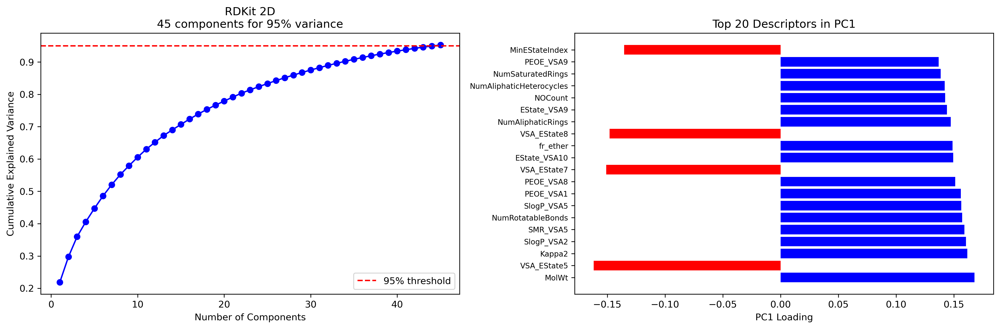 Figure 1: PCA analysis of RDKit 2D descriptors
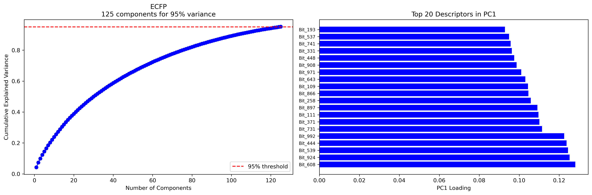 Figure 2: PCA analysis of ECFP descriptors
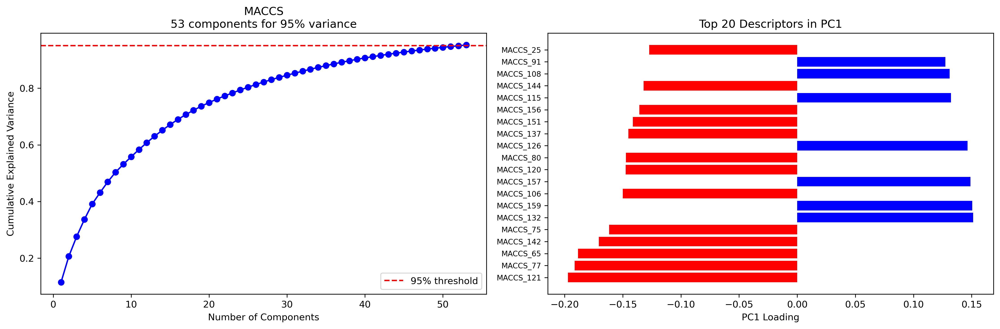 Figure 3: PCA analysis of MACCS descriptors
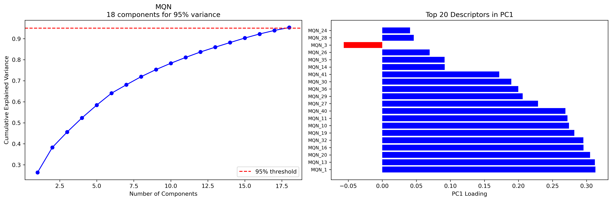 Figure 4: PCA analysis of MQN descriptors
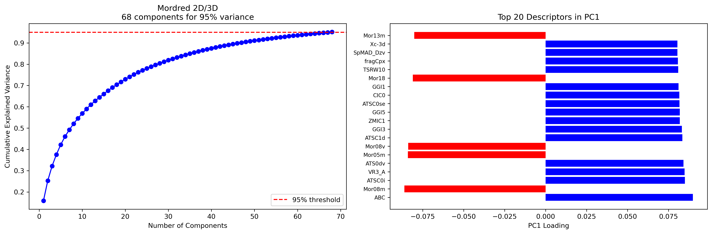 Figure 5: PCA analysis of Mordred 2D/3D descriptors
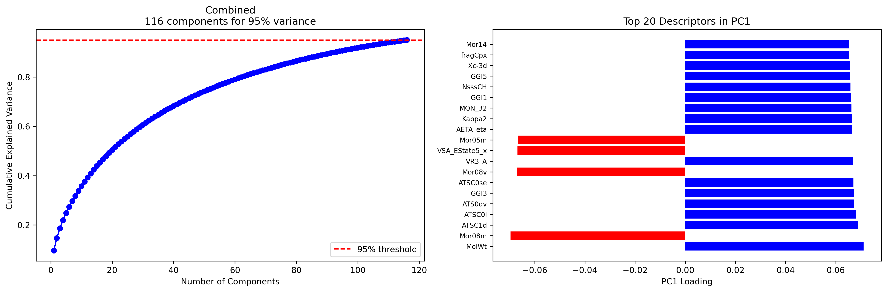 Figure 6: PCA analysis of combined descriptors
The number of components required to explain 95% of variance for each descriptor type:
| n_components | first_pc_variance | |
|---|---|---|
| RDKit 2D | 45.0 | 0.218625 |
| ECFP | 125.0 | 0.042531 |
| MACCS | 53.0 | 0.115012 |
| MQN | 18.0 | 0.263674 |
| Mordred 2D/3D | 68.0 | 0.158850 |
| Combined | 116.0 | 0.096155 |
Supervised feature selection#
Three supervised feature selection methods—LASSO regression, Random Forest, and Boruta—were applied to each preprocessed descriptor set. Each method implements a restriction to half the number of samples for the maximum number of selected features []. The selection methods process the descriptors differently. LASSO bases selection on regression coefficients []. Random Forest employs feature importance scores from mean decrease in impurity []. The Boruta algorithm uses a statistical testing approach with randomized features [].
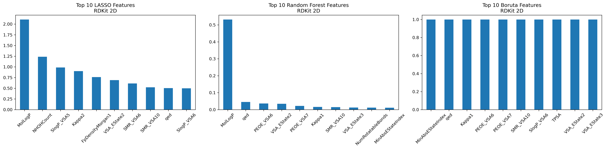 Figure 1: Top 10 features selected by each method for RDKit 2D descriptors
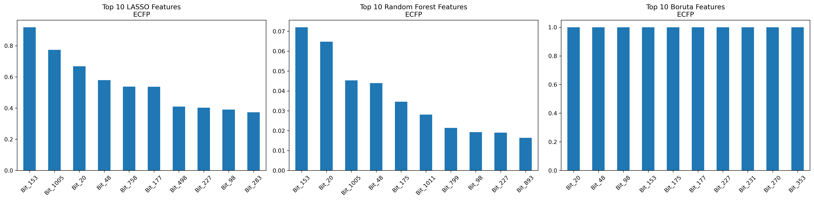 Figure 2: Top 10 features selected by each method for ECFP fingerprints
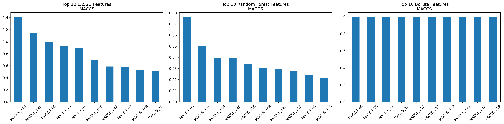 Figure 3: Top 10 features selected by each method for MACCS keys
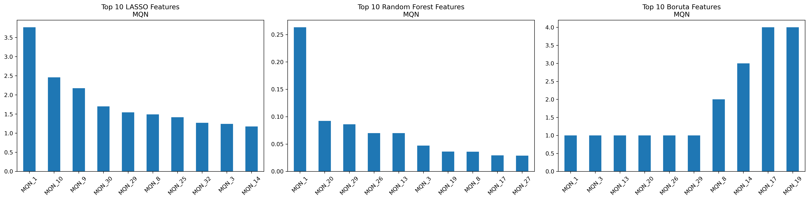 Figure 4: Top 10 features selected by each method for MQN descriptors
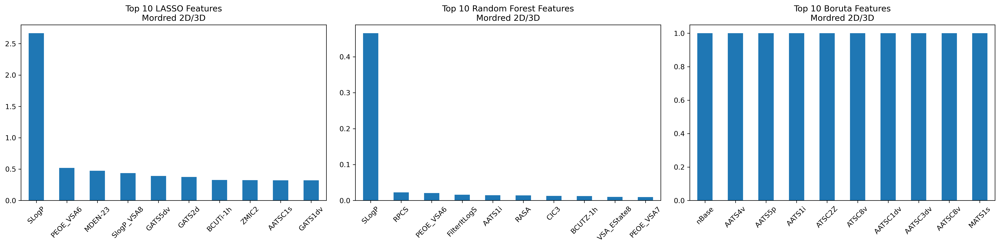 Figure 5: Top 10 features selected by each method for Mordred 2D/3D descriptors
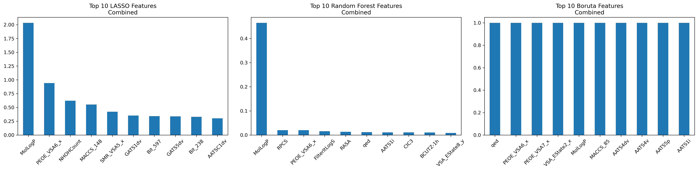 Figure 6: Top 10 features selected by each method for Combined descriptors
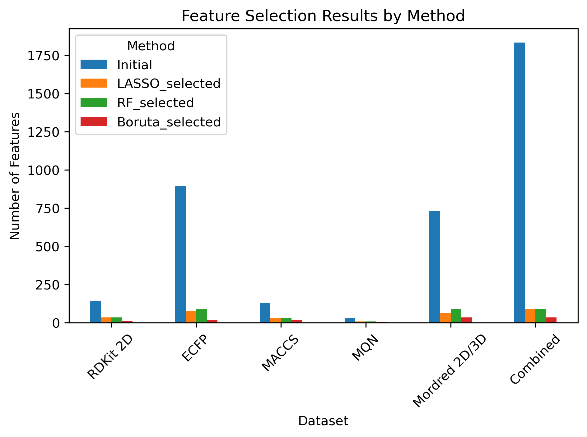 Figure 7: Comparison of feature selection results across methods and descriptor types
The number of selected descriptors varies by method and descriptor type, as shown in the results summary:
| Dataset | Initial | LASSO_selected | RF_selected | Boruta_selected | |
|---|---|---|---|---|---|
| 0 | RDKit 2D | 139 | 35 | 35 | 11 |
| 1 | ECFP | 893 | 74 | 91 | 17 |
| 2 | MACCS | 128 | 32 | 32 | 15 |
| 3 | MQN | 33 | 8 | 8 | 6 |
| 4 | Mordred 2D/3D | 731 | 64 | 91 | 34 |
| 5 | Combined | 1833 | 91 | 91 | 35 |